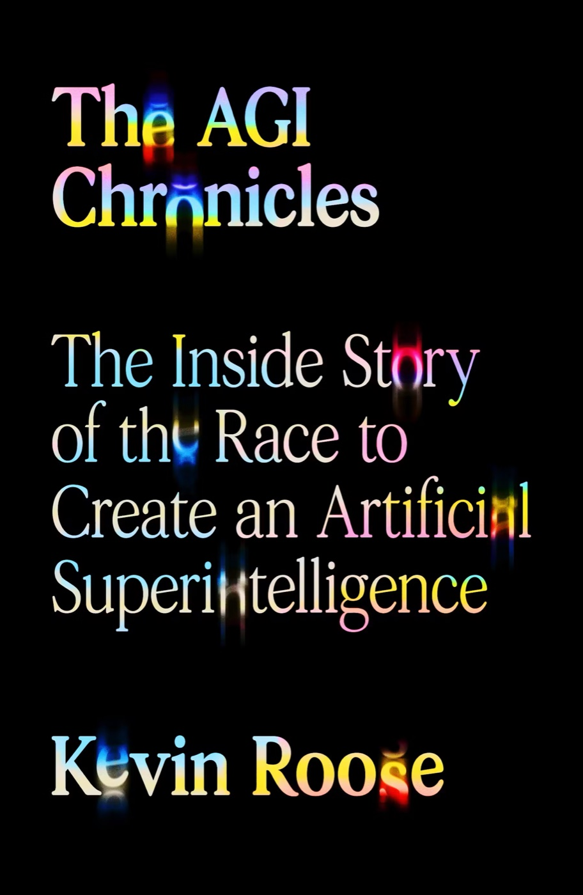

★ Starred reviews · Publishers Weekly & Kirkus
The AGI Chronicles
The Inside Story of the Race to Create an Artificial Superintelligence
Hardcover · Farrar, Straus and Giroux · On sale October 6, 2026

Get the book
Available in hardcover, e-book, and audiobook — read by the author.
- Amazon
- Barnes & Noble
- Bookshop.org supports indie bookstores
- Books-A-Million
- Apple Books
- Audible audiobook
- Libro.fm indie audiobooks
- Spotify audiobook
Prefer e-reading? Kindle edition is available too.
Early praise
“In this exciting and brilliantly reported book, Kevin Roose takes us behind the scenes of the secretive race to create artificial general intelligence. The AGI Chronicles is filled with drama and bitter rivalries, very colorful characters, and fascinating breakthroughs. Roose makes the technology understandable while also conveying the historic nature of a new world being born.”
“By taking us inside the deeply human culture where AGI is being built, Kevin Roose brilliantly captures a truth I’ve long argued: AI is not an alien invasion, but a profound product of our own humanity… The AGI Chronicles provides the vital human context for the intelligence explosion ahead.”
“A propulsive chronicle of the breakneck sprint to develop artificial general intelligence… Clear-eyed, deeply reported, and brisk, Roose’s account is an indispensable window into how the world arrived at a precarious technological inflection point.”
“Stuffed with head-spinning journeys into how AI/AGI models are constructed and trained… The best single explainer of how artificial intelligence came about, and what might happen next.”
About the book
This is the story of the twenty-first century’s Manhattan Project: the race to create artificial general intelligence.
For the last decade, a handful of AI companies have been racing to build the most powerful technology in history: artificial general intelligence, or AGI—a computer system capable of outdoing humans at almost anything. Some of them hoped AGI would cure diseases and heal the planet. Others feared it could kill everyone on Earth. They decided to build it anyway.
Kevin Roose’s The AGI Chronicles is the definitive, behind-the-scenes account of the trillion-dollar sprint to create AGI. Drawing on more than 150 interviews with insiders at OpenAI, Anthropic, and Google DeepMind, as well as unpublished company documents and research memos, Roose reconstructs the most consequential decade in tech history. He takes us inside the rooms where researchers watch large language models learn to talk, reason, and code at superhuman speed. He brings us to the White House, where top officials grapple with a technology that is improving too fast to understand, let alone regulate. He offers new details on the disagreements that led the founders of Anthropic to defect from OpenAI, and fresh reporting on Sam Altman’s dramatic firing—and equally dramatic reinstatement—as CEO. He gives us the inside story of Google’s frantic attempt to catch up to the AI frontier. And he ushers us into the San Francisco AI scene, where “accelerationists” in hacker houses and “doomers” at AI safety summits battle each other for supremacy.
With reportorial rigor and page-turning suspense, The AGI Chronicles reveals the true story of the most high-stakes technological quest in human history—an audacious attempt to create a new, alien form of intelligence that could either save humanity or destroy it.
- Interviews
- 150+
- Inside
- OpenAI, Anthropic & Google DeepMind
- Pages
- 448
- On sale
- Oct 6, 2026
Contact Kevin
For interviews, speaking invitations, book clubs, bulk orders, or anything else about The AGI Chronicles, use this form.
For rights and publicity inquiries, you can also reach the publisher, Farrar, Straus and Giroux.